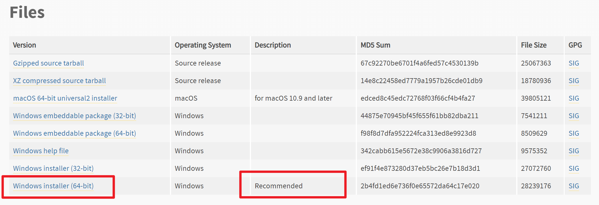
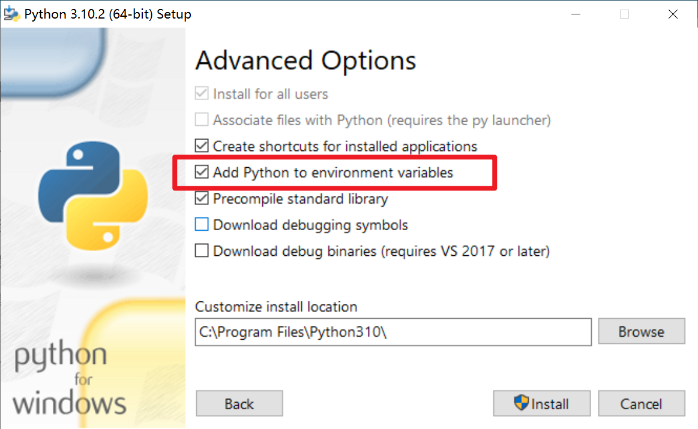

Chapter 2 安装Python
2020-10-16
2 min read
安装Python
安装Python非常非常简单，并且免费。访问这个网站：https://www.python.org/downloads/windows/，点击“Latest Python 3 Release”上的链接，就能得到最新的Python3版本。当进来后，网页拉到最下方，点击“Windows installer (64-bit)”，即可开始下载。下载后双击即可安装。

此处，唯一需要注意的是，Python运行需要依赖“环境变量”（Windows设置路径的一个机制），好在最新版本的Python能够帮我们自动配置环境变量。在安装时，在“Advanced Options”种注意勾选“Add Python to environment variables”。

当安装完毕后，打开windows的命令提示行（可以在左下角搜索栏输入“cmd”），输入python，如果得到如下输出：
C:\Users\XXX>python
Python 3.10.2 (tags/v3.10.2:a58ebcc, Jan 17 2022, 14:12:15) [MSC v.1929 64 bit (AMD64)] on win32
Type "help", "copyright", "credits" or "license" for more information.
>>>
那么就说明已经大功告成！接下来，你可以输入你的第一行命令：
>>> print('Hello, Python!')
Hello, Python!
你当然也可以把他作为你的私人计算器：
>>> 1+2
3
神奇吗？不需要像C或者Java那样新建一个文件，写一大堆int main()这样令人难解的语句才能运行。Python就像你的一位朋友，你说一句，他答一句。嗯，就是这么令人舒适！